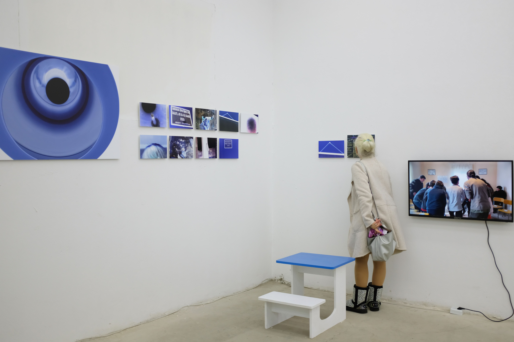
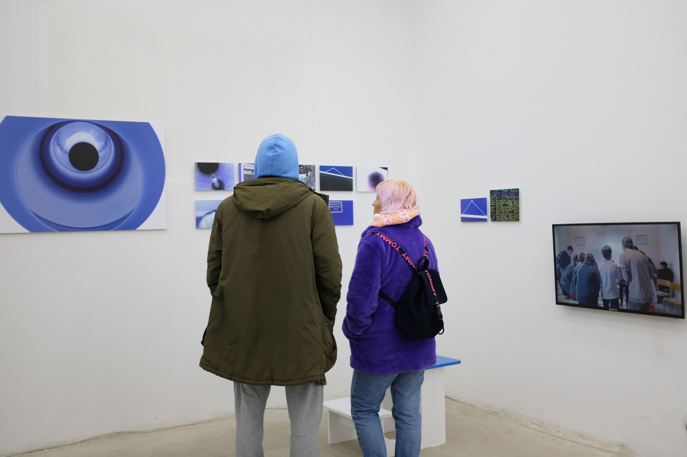
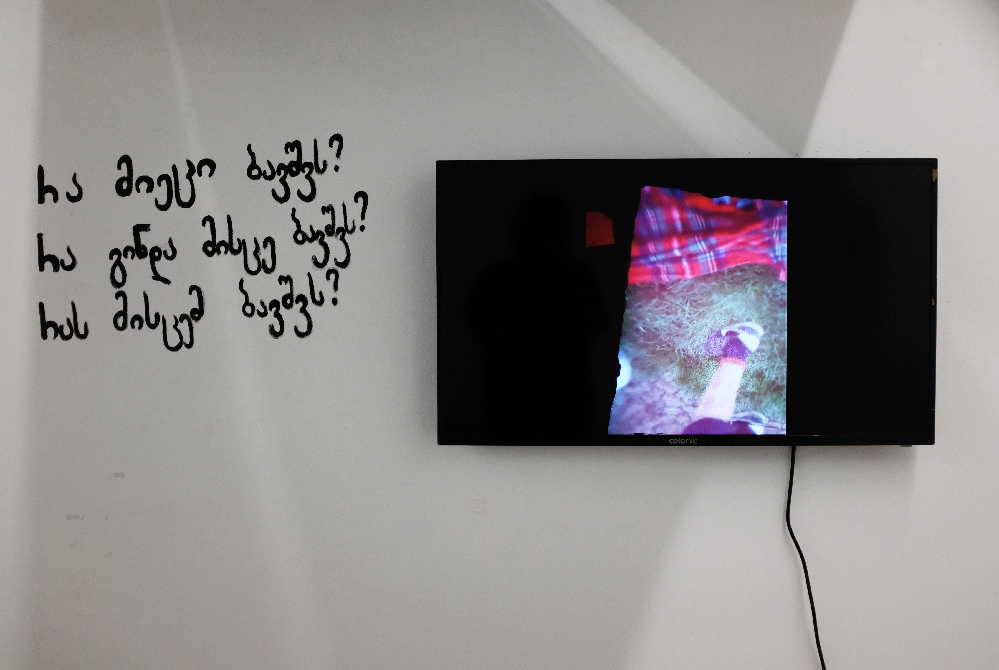
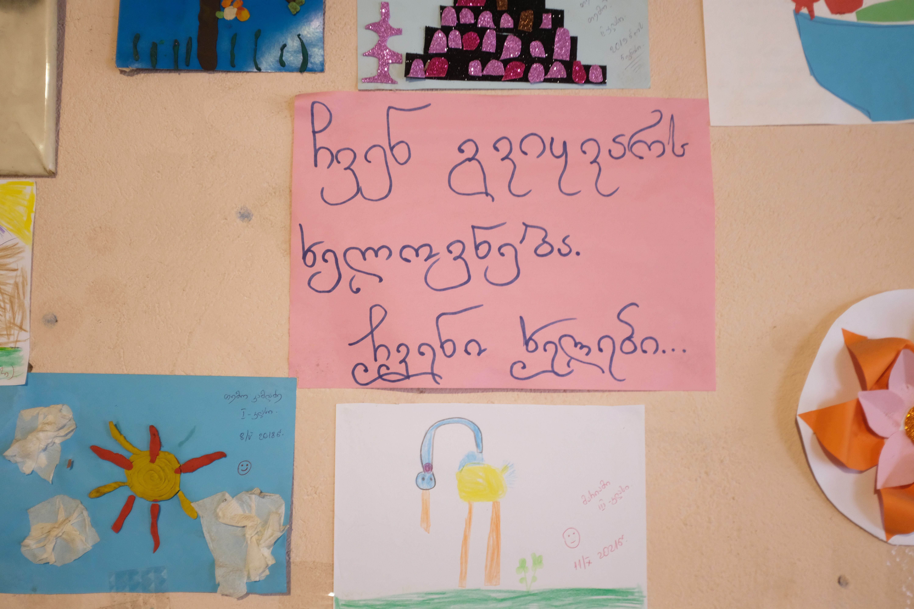
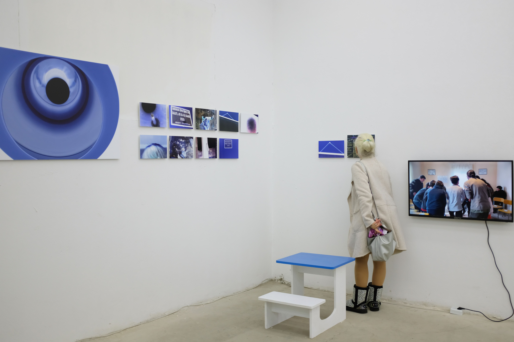
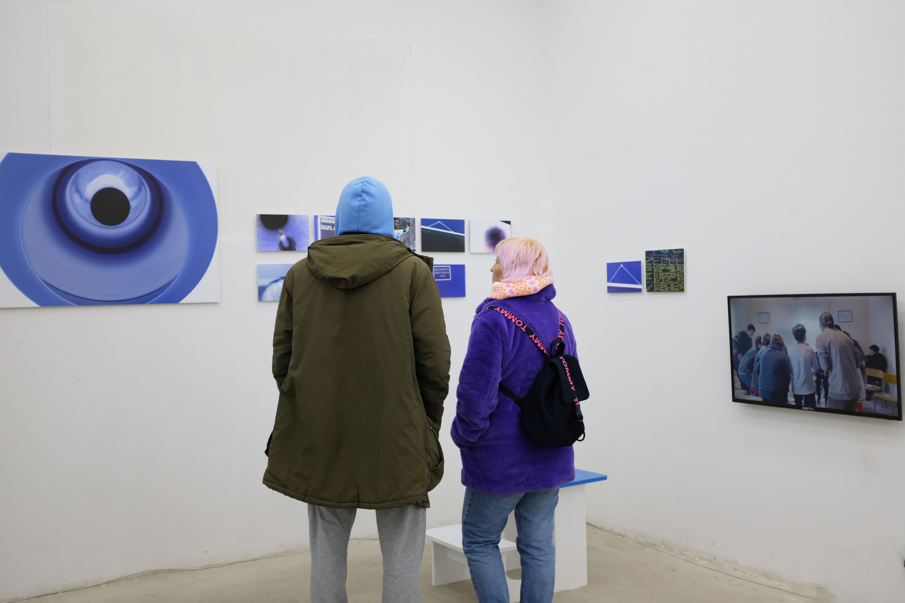
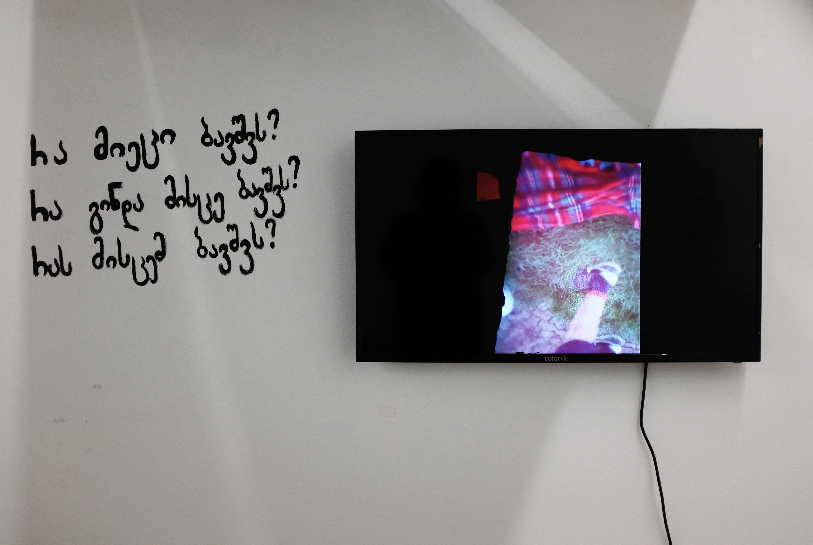
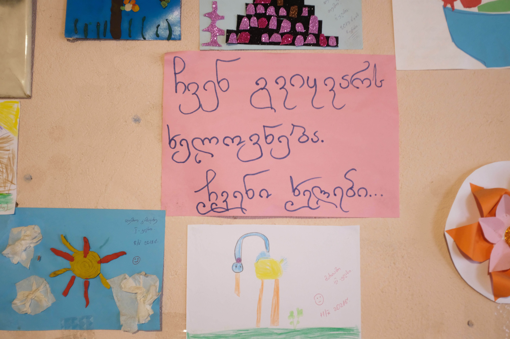

Project "extracurricular" is a sum up of educational creativity, it's main direction is visual art. The purpose is to help the students of public schools to develope some creative skills, with the help of different workshops it is possible to make them want to observe and learn the environment.
Presented works are made by the students of Dzmuisi public school. Photos are the result of observing one of many classrooms. Students discovered the most interesting parts of the classroom themselves with frames which were curved out by their hands, then they captured them in photos and final options were chosen. Also there were students and teachers with different ages included.
Participants: Gabriel Gotiashvili, Andria Gabelashvili, Nino Kharatishvili, Mariam Kharatishvili, Nia Rizhamadze, Atuka Kamladze, Mariam Kharatisvhili, Temo Kamladze, Tengo Kharatisvhili, Giorgi Gotiashvili, Guga Gotiashvili, Anano Gabelashvili.
Thanks to the artists who took part in this project:Nika Khabelashvili, Sharaf Naghiyeva.
 



>




>